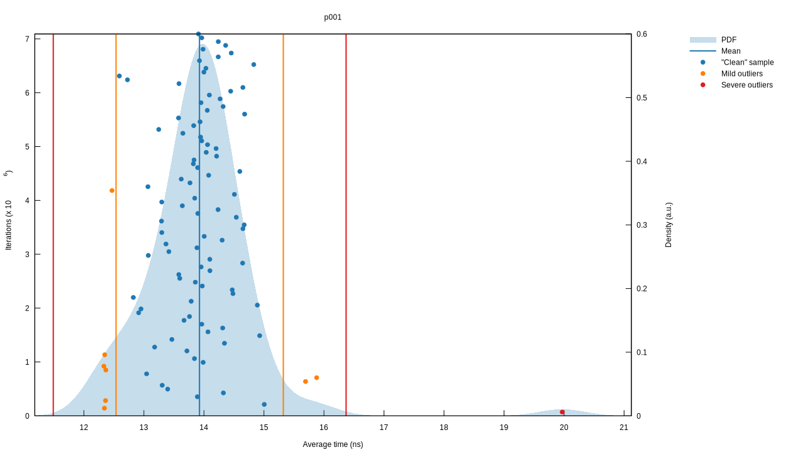
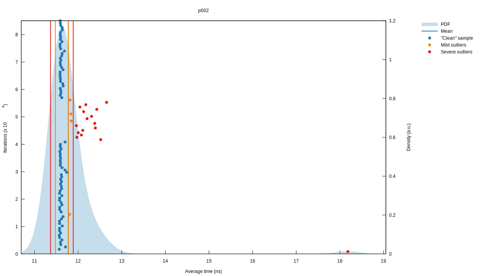

Project Euler Solutions
These are my coded solutions and explanations for problems from Project Euler.
In each you will find a brute-force solution and steps to improve it. The problems are inherently mathematical and the explanations for the more optimal solutions necessitate delving into number theory. I have tried to explain concepts from the ground up, though some familiarity with mathematical notation will be useful.
Whilst every effort has been made to ensure the explanations are accurate and correct, you are encouraged to raise an issue on the source repository if you find a mistake. If you know the fix, a pull request would be even better! Many thanks in advance.
Problems
These solutions are implemented in Rust. Rust hits a sweet spot between performant and expressive code. Benchmarks are included that illustrate the solutions are optimised beyond a naive implementation. It is my hope that you will find the code clear and concise.
Benchmarks are performed by the Criterion library. Criterion also generates the included reports and uses Gnuplot under the hood to generate the graphs.
Clippy is used to lint the code. The build and deployment process is managed by Travis CI. You can find the source for the project in its repository on GitHub.
This book itself is generated with mdBook and hosted on GitHub Pages.
Problem 001
If we list all the natural numbers below 10 that are multiples of 3 or 5, we get 3, 5, 6 and 9. The sum of these multiples is 23.
Find the sum of all the multiples of 3 or 5 below 1000.
We can solve this by iterating from one to one thousand, filtering out numbers that are multiples of three or five, and summing the remaining numbers. Let's implement something along those lines.
fn main() { let result = (1..1_000) .filter(|n| [3, 5].iter().any(|m| n % m == 0)) .sum::<u32>(); println!("{}", result); }
Try it out. It runs in the order of microseconds with these inputs. This implementation is simple, demonstrates the intention, and runs in \( O(n) \) time with respect to the limit, which is \( 1000 \) here. However, we can improve the run time by about a thousand times with some number theory.
Gauss and Sequence Summation
Guass' method of summing a sequence of numbers starting with \( 1 \) doesn't rely on iteration.
\[ \sum_{i=1}^{n} i = \dfrac{n(n + 1)}{2} \tag{1}\label{1} \]
To see why this works, let's look at when \( n = 6\).
\[ \sum_{i=1}^{6} i = 1 + 2 + 3 + 4 + 5 + 6 \]
For each number \( x_i \) up to \( \frac{n}{2} \), pair it with \( x_{n-i+1} \).
\[ 1 + 6 = 7 \] \[ 2 + 5 = 7 \] \[ 3 + 4 = 7 \]
We have \( \frac{n}{2} \) pairs and each pair is equal to \( 7 \), or \( n + 1 \), hence our equation is \( \frac{n}{2} \cdot (n + 1) \) and equivalent to equation \( \eqref{1} \).
If \( n \) is odd, we won't be able to pair all of the numbers unless we include \( 0 \). Let's try this with \( n = 7 \).
\[ 0 + 7 = 7 \] \[ 1 + 6 = 7 \] \[ 2 + 5 = 7 \] \[ 3 + 4 = 7 \]
Now we have \( \frac{n + 1}{2} \) pairs but they all equal \( n \), so our equation is \( \frac{n + 1}{2} \cdot n \), which is also equivalent to equation \( \eqref{1} \). So we have a way to sum a sequence all of the numbers up a given \( n \), and we have a method of intuitively understanding why it works. But what if we didn't have the formula to begin with?
Recurrences and Mathematical Induction
We can start by defining the recurrence relation for the sequence.
\[ \begin{align} \\ S_{0} &= 0 \tag{2}\label{2} \\ S_{n} & = S_{n-1} + n, \quad \text{for } n \in \mathbb{N}_1 \tag{3}\label{3} \end{align} \]
A recurrence relation is an equation or set of equations that express each term of a sequence with respect to earlier terms, and often include one or more intial conditions. Recurrence relations lead to inherently recursive solutions. We can compute any \( S_{n} \), but only by caclulating all of the previous values in the sequence. In this instance, that would result in an \( O(n) \) runtime. The work we have to do is effectively unbounded because it scales with \( n \). It would be better to have a solution that has a known finite amount of work to perform, called a closed form solution.
One method to find the closed form of a recurrence is to guess the solution and then prove its correctness. We could start by looking at the smaller cases of the sequence and trying to see the pattern of the progression.
\[ 0, 1, 3, 6, 10, 15 \quad = \quad \frac{0 \cdot 1}{2}, \frac{1 \cdot 2}{2}, \frac{2 \cdot 3}{2}, \frac{3 \cdot 4}{2}, \frac{4 \cdot 5}{2}, \frac{5 \cdot 6}{2} \]
From that, we can define our proposition.
\[ S_{n} = \frac{n(n + 1)}{2}, \quad \text{for } n \in \mathbb{N}_0 \tag{4}\label{4} \]
A proposition is the statement we wish to prove, and a method we can use to prove it by is called mathematical induction. We define a basis, \( n_0 \), that is the smallest value of \( n \), and prove our proposition for \( n_0 \). We then define an induction, where \( n > n_0 \). Our earlier recurrence naturally fits into this framework.
First, we prove the basis by substituting the value of equation \( \eqref{2} \) into our proposition \( \eqref{4} \).
\[ \begin{align} S_0 & = \frac{0 \cdot (0 + 1)}{2} \\ & = 0 \end{align} \]
To prove the induction, we take our recurrence \( \eqref{3} \), which we know to be correct, and substitute our proposition \( \eqref{4} \) into it.
\[ \begin{align} S_n & = S_{n-1} + n \\ & = \frac{(n - 1) \cdot ((n - 1) + 1)}{2} + n \end{align} \]
Our goal is to get back to the proposition \( \eqref{4} \) from the equation with the substitution. Doing that is proof that our proposition holds. We solve the equation algebraically.
\[ \begin{align} \\ S_n & = \frac{(n - 1) \cdot ((n - 1) + 1)}{2} + n \\ & = \frac{(n - 1) \cdot n}{2} + \frac{2n}{2} \\ & = \frac{n(n - 1) + 2n}{2} \\ & = \frac{n(n - 1 + 2)}{2} \\ & = \frac{n(n + 1)}{2} \end{align} \]
Success! We can now be confident that our closed form solution is correct for all of the input values we care about.
Implementation
Our closed form solution has a finite amount of work to do regardless of the input value \( n \), so its runtime is \( O(1) \). Let's implement it.
fn sum_to(n: u32) -> u32 {
(n * (n + 1)) / 2
}
#
# assert_eq!(sum_to(0), 0);
# assert_eq!(sum_to(1), 1);
# assert_eq!(sum_to(2), 3);
# assert_eq!(sum_to(3), 6);
# assert_eq!(sum_to(4), 10);
# assert_eq!(sum_to(5), 15);
# assert_eq!(sum_to(6), 21);
# assert_eq!(sum_to(7), 28);
Since we're dividing by \( 2 \) here, you may think we can further optimise this by performing a logical right shift by one place instead. Doing so did not result in a change in performance when I benchmarked it, likely because Rust's compiler already takes care of simpler optimisations like this.
Now we can sum sequences like like \( 1 + 2 + 3 + 4 + 5 + \cdots + n \), but our problem statement is asking for something different. Instead of each term in our sequence incrementing by \( 1 \), we want it increment by an arbitrary amount \( x \) that corresponds to the base of the multiples that we are summing. So for \( x = 3 \), we want \( 3 + 6 + 9 + 12 + 15 \cdots + n \). This should result in a lower answer, because we are including less terms in the sequence. It's simply a matter of dividing our inner \( n \) by \( x \) and taking the floor of this value.
\[ \sum_{i=1}^{\lfloor \frac{n}{x} \rfloor} xi = \dfrac{n(\lfloor \frac{n}{x} \rfloor + 1)}{2} \tag{5}\label{5} \]
So now we have the afformentioned multiples-of-three sequence and we can calculate \( 5 + 10 + 15 + \cdots + n \). But as you can see from looking at the sequences, we're including \( 15 \) twice, and we would also include all of its multiples up to \( n \). \( 15 \) is the product of all of the values in the input set, hence we must subtract the sum of the multiples of the product of the input set. This brings us to our solution.
# fn sum_to(n: u32) -> u32 {
# (n * (n + 1)) / 2
# }
#
pub fn sum_all_multiples(xs: &[u32], n: u32) -> u32 {
let sum_multiples_for_x = |x| x * sum_to((n - 1) / x);
let multiples = xs.iter().map(sum_multiples_for_x).sum::<u32>();
let product_multiples = sum_multiples_for_x(&xs.iter().product::<u32>());
multiples - product_multiples
}
This solution allows us to generalise the problem statement.
Given a set of numbers \( xs \), find the sum of all of the multiples of these numbers that are under a limit \( n \).
The solution shows another way to think about equation \( \eqref{5}
\). sum_multiples_for_x multiplies sum_to with the value of x
because the sum should be x times larger than the sum of sequence
where each term is one larger than the previous term. But because we
still only want to sum values up to n, we divide the value we pass
to sum_to by x.
This implementation runs in the order of nanoseconds.

Problem 002
Each new term in the Fibonacci sequence is generated by adding the previous two terms. By starting with 1 and 2, the first 10 terms will be:
1, 2, 3, 5, 8, 13, 21, 34, 55, 89, ...
By considering the terms in the Fibonacci sequence whose values do not exceed four million, find the sum of the even-valued terms.
Let's return to the practice we established in the first problem and state our recurrence relation. We shall begin the sequence from \( 0 \) instead of \( 1 \) to ensure that our solution works for all natural numbers, though of course we're still bound by the bit widths of our integer types.
\[ \begin{align} \\ F_0 &= 0 \\ F_1 &= 1 \\ F_n &= F_{n-1} + F_{n-2} \end{align} \]
A recursive Fibonacci implementation follows from this recurrence, and from there it's simply a matter of calling this function with every natural number, filtering out values that aren't even, stopping once we've reached our limit value, and summing all the numbers we've collected.
fn main() { let result = (0..) .filter_map(|i| Some(fib(i)).filter(|n| n % 2 == 0)) .take_while(|&n| n < 4_000_000) .sum::<u32>(); println!("{}", result); } fn fib(n: u32) -> u32 { match n { 0 => 0, 1 => 1, _ => fib(n - 1) + fib(n - 2), } }
Our Fibonacci algorithm is \( O(2^n) \), so we shouldn't expect our runtime to be stellar. Profiling our implementation confirms this.
Lower bound: 192.39 ms
Best estimate: 192.49 ms
Upper bound: 192.60 ms
It could be worse, but there's definitely room for improvement.
Memoization
A clear understanding of why this Fibonacci algorithm is \( O(2^n) \) will illustrate where we can make improvements. Consider what our function calls would look like.
\[ \begin{align} \\ F_n &= F_{n-1} + F_{n-2}, \quad &\text{2 terms, } 2^1 \\ &= F_{n-2} + F_{n-3} + F_{n-3} + F_{n-4}, \quad &\text{4 terms, } 2^2 \\ &= F_{n-3} + F_{n-4} + F_{n-4} + F_{n-5} + F_{n-4} + F_{n-5} + F_{n-5} + F_{n-6}, \quad &\text{8 terms, } 2^3 \end{align} \]
Here, \( F_{n-3} \) is called twice on the second line, each time calling \( F_{n-4} \), itself which may result in the same value being called multiple times. Each one of these calls is a calculation to perform, and it's currently being done repeatedly on the same values.
This is the problem memoization solves. Memoization is an
optimisation technique. Whenever we calculate an intermediate value,
we cache it and enable it to be used later on. We can use a HashMap
for this purpose.
# use std::collections::HashMap;
#
fn fib(n: u32, cache: &mut HashMap<u32, u32>) -> u32 {
match cache.get(&n) {
Some(ret) => *ret,
None => {
let ret = match n {
0 => 0,
1 => 1,
_ => fib(n - 1, cache) + fib(n - 2, cache),
};
cache.insert(n, ret);
ret
}
}
}
As expected, we see a dramatic performance increase.
Lower bound: 3.6219 us
Best estimate: 3.6337 us
Upper bound: 3.6463 us
Reducing Time And Space
We've reduced the time complexity of our Fibonacci algorithm down
from \( O(2^n) \) to \( O(n) \), but only at the expense of space
complexity. Whilst before we had space taken up by stack frames during
the recursion, it's now being taken up by the HashMap in
addition. Neither of these allocations are necessary.
Consider the fact that we don't need to calculate arbitrary terms in
the sequence. We only ever need to know the next term. To know the
next term, we only ever need to know the two previous terms. We could
instead create an iterative solution, removing the memory needed for
the stack frames during recursion, and only hold the previous two
values in memory at a given time, removing the need for the HashMap.
Going even further, consider that we only need the even terms. Let's look to see if there's a pattern for when they occur.
\[ \mathbf{0}, 1, 1, \mathbf{2}, 3, 5, \mathbf{8}, 13, 21, \mathbf{34}, 55, 89, \mathbf{144} \]
It appears that every third item of the sequence is even. We can prove this with the laws of arithmetic.
\[ even + even = even \] \[ odd + odd = even \] \[ even + odd = odd \]
Given the first and second term is even and odd respectively, the third term must be odd, and given that, the fourth term must be even, and then the fifth term odd. The sequence is periodic in this respect because it is based on previous values. If this property exists at the start of the sequence, it exists for the entire sequence.
Return once again to our recurrence, and observe it can be written in terms of every third term.
\[ F_n = F_{n-1} + F_{n-2} \] \[ F_{3n} = F_{3n-1} + F_{3n-2} \]
If we could formulate the recurrence in terms of the \( n - 3 \) and \( n - 6 \), we could reduce it to only care about every third term.
\[ \begin{align} \\ F_{3n} &= \color{blue}{F_{3n-1}} + F_{3n-2} \\ &= \color{blue}{F_{3n-2} + F_{3n - 3}} + F_{3n-2} \\ &= 2 \cdot \color{purple}{F_{3n-2}} + F_{3n - 3} \\ &= 2 \left(\color{purple}{F_{3n-3} + F_{3n - 4}}\right) + F_{3n-3} \\ &= 3 \cdot F_{3n-3} + F_{3n-4} + \color{green}{F_{3n-4}} \\ &= 3 \cdot F_{3n-3} + F_{3n-4} + \color{green}{F_{3n-5} + F_{3n-6}} \\ &= 3 \cdot F_{3n-3} + F_{3n-3} + F_{3n-6} \\ &= 4 \cdot F_{3n-3} + F_{3n-6} \end{align} \]
Now, if we divide our indices by \( 3 \), we have a recurrence that yields the even-valued Fibonacci numbers.
\[ E_n = 4 \cdot E_{n-1} + E_{n-2} \]
Implementation
Let's create a data structure to hold the two values we need. By
implementing Default, we can seed our initial values, and by
implementing Iterator, we obtain the means to manipulate the
sequence as we please and this will simplify our solution to the
original problem.
pub struct EvenFibIter {
a: u32,
b: u32,
}
impl Default for EvenFibIter {
fn default() -> Self {
Self { a: 0, b: 2 }
}
}
impl Iterator for EvenFibIter {
type Item = u32;
fn next(&mut self) -> Option<Self::Item> {
let curr = self.a;
self.a = self.b;
self.b = 4 * self.a + curr;
Some(curr)
}
}
This solution has a time complexity of \( O(n) \) and a space complexity of \( O(1) \). It is now simple to solve the problem.
pub fn sum_of_even_value_fibs(limit: u32) -> u32 {
EvenFibIter::default().take_while(|&n| n < limit).sum()
}
#
# pub struct EvenFibIter {
# a: u32,
# b: u32,
# }
#
# impl Default for EvenFibIter {
# fn default() -> Self {
# Self { a: 0, b: 2 }
# }
# }
#
# impl Iterator for EvenFibIter {
# type Item = u32;
#
# fn next(&mut self) -> Option<Self::Item> {
# let curr = self.a;
# self.a = self.b;
# self.b = 4 * self.a + curr;
#
# Some(curr)
# }
# }
This implementation runs in the order of nanoseconds.
